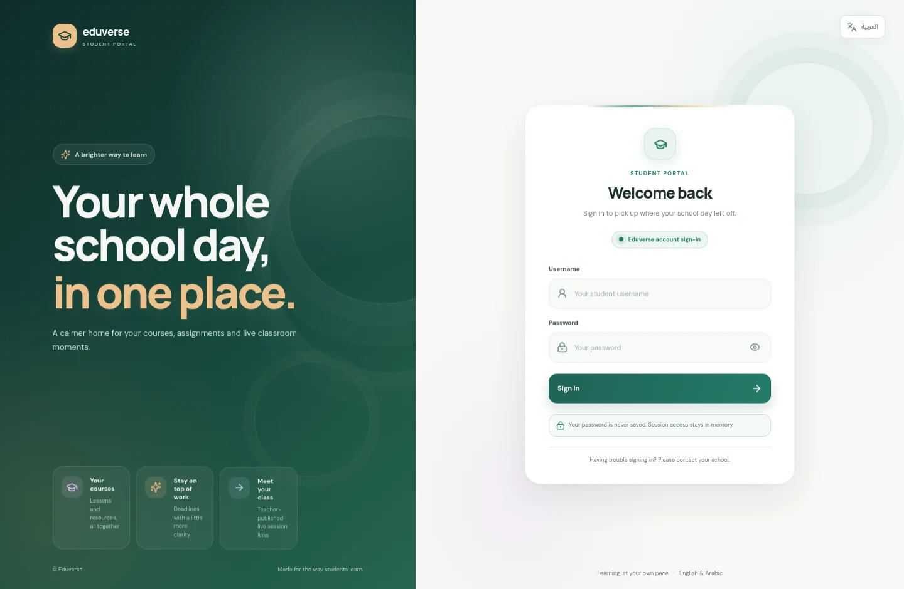

01PRODUCT · MULTI-PLATFORM
SalahNest
A calmer home for daily worship.
An Islamic companion with locally calculated prayer times, Quran reading and audio, Qibla direction, dhikr, a Hijri calendar, and personal prayer records.
A SMALL HOME FOR MY WORK
I’m Malek Mahmoud. I build practical digital projects with a focus on clarity, calm, and the details that make everyday routines easier.
A few useful things, made with intention — and a little curiosity.
Scroll to exploreTHINGS I’M BUILDING
Two projects, each solving a different everyday problem.
An Islamic companion with locally calculated prayer times, Quran reading and audio, Qibla direction, dhikr, a Hijri calendar, and personal prayer records.
A responsive redesigned student portal organizing coursework, schedules, and live-class links with a bilingual interface.
Explore the redesignFEATURED CASE STUDY · EDUVERSE
The Student Portal Redesign brings coursework, schedules, lessons, materials, and live-class links into a responsive experience with English and Arabic language support.
Visit the Student Portal Redesign
A structured portal brings courses, lessons, and materials into a clearer place to continue learning.
English and Arabic support, including RTL layout, keeps the responsive interface welcoming across devices.
This public preview shows no student records. Personal account data remains behind the official sign-in flow.
The image above is the actual public sign-in / landing view of the deployed redesign, not a concept mockup. Student-specific records are account-scoped and remain behind sign-in.
HOW I LIKE TO BUILD
Start with a real need. Make the next step clear.
Let the important thing stand out; keep the rest out of the way.
Explain what works, what stays local, and where a tool stops.
A LITTLE ABOUT ME
I enjoy turning everyday ideas into digital tools that feel clear and welcoming. SalahNest is my ongoing product, and the Student Portal Redesign is a responsive bilingual learning experience.
Find my projects on GitHubGood software should feel a little lighter than the problem it solves.
— MalekTHANKS FOR STOPPING BY